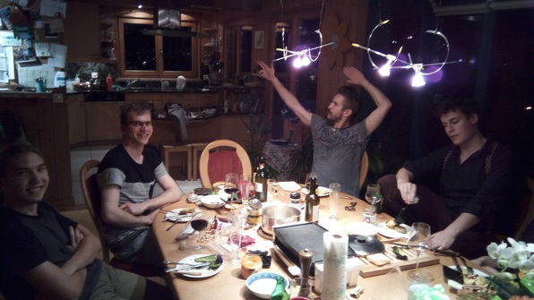
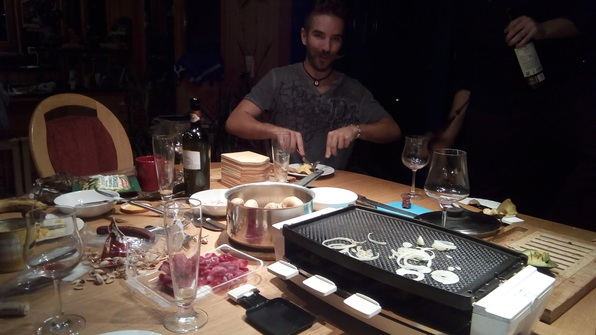
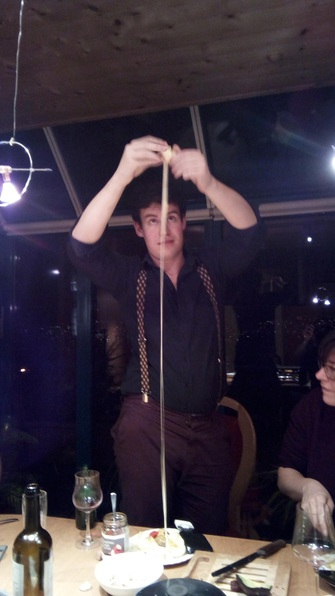

Having dropped Machine Learning to get down to a manageable 28 credits, I had the day nearly free! Made the Aunties (Aunt Joan and Aunt Julie, who are visiting from home) some mushroom omelets.
Then I did a bit of work, met Aleks for lunch (he’d just gone to another programming competition in Prague), played basketball, did some more work, skyped Grace.. Suddenly it was the evening and I was off to my friend Jenda’s house to make raclette! I was a bit skeptical, but my buddy Martin was in. We were going to travel there together, since he had no data on his phone and didn’t want to get lost.
However, we got lost immediately since we agreed to go to Haldenbach tram stop, but I got confused and went to Haldenegg. I realized my mistake immediately and ran to Haldenbach, but by that time Martin was already at the HB. We decided on a train remotely (Martin using the HB wifi) and after an epic struggle on my part with the ticket machine, I hauled to the train. Martin was nowhere in sight. But just as the doors were closing, he hopped on. What madness! I drew out two beers from my bag and Martin regaled me with the story of how he’d hauled to Haldenbach just in time to catch the tram that didn’t show up because it was actually going to Haldenegg :)
We hopped out a few stops hence, nearly on the bank of the Zurichsee. It was beautiful to look across the water (nearly looked like Seattle!)
At the top of a few switchbacks we met Aleks, who’d biked there, and walked up the stairs to Jenda’s house. He was staying with a wealthy family (friends with a professor from his home U) and it was beautiful! He let us in and I felt as though I was in the Koepps’ house in Bellingham or something, all homey and family-like, with cheerful signage everywhere and wood paneling.
We met an Italian friend of Jenda’s and his girlfriend, then got cracking. I chopped up a jalapeño freshly arrived from the States, which was a great amusement–it was very spicy and Martin, the Italian dude and I tried to outdo each other with it. The conversation, over beer and some fine Italian wine, was blithe and hearty. We cooked some potatoes and started melting the cheese in little metal pans in the family’s raclette maker.
  
The cheese was amazing. We sat a long time to savor it, as the talk turned from Russian politics to Italian economics.
And after all that, I was ready to head out, but Martin found his way to the family’s lovely upright piano, and we had a downright jam session! Martin played, I tried to sing along with him, and we actually nailed some lovely tunes! Martin tried to switch to a guitar missing its E string, which was entertaining. And we played some songs on the sweet speaker set there.
At last Martin and I caught the train back, and Martin gave a very detailed set of philosophical pros and cons for whether or not to pay the train fare. Pay it, because anarchy is bad; but don’t pay it, because public infrastructure like trains should be paid by taxes (it’s a zero marginal supply cost good). I preferred my local argument, which reduces the problem to \(Risk-Aversion-Bias(\frac{price-fine * probability-fine}/{price-fare})\).
Finally, back to Culmann. Intended to go straight to bed but the gals of 2+ were going wild, playing YouTube videos at top volume and dancing like crazy. I joined them for a bit, got into a conversation with Mia which ended up with her accidentally dumping her potted plant and soil onto my desk (what happens in Culmann…) Then hit the hay.